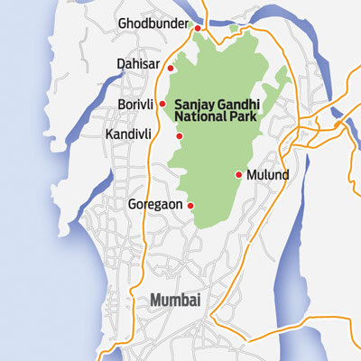

Mumbai, India
I have been born and brought up in the city of Mumbai, India. It is one of the largest populated cities in the world and is also know as Financial hub of India.
I grew up in one of the mumbai suburbs (Mulund) which laid on the border between the concrete and natural jungles. Thanks to the small hillock that was open for public in that natural park,
it made me embrace the nature and mountains.
